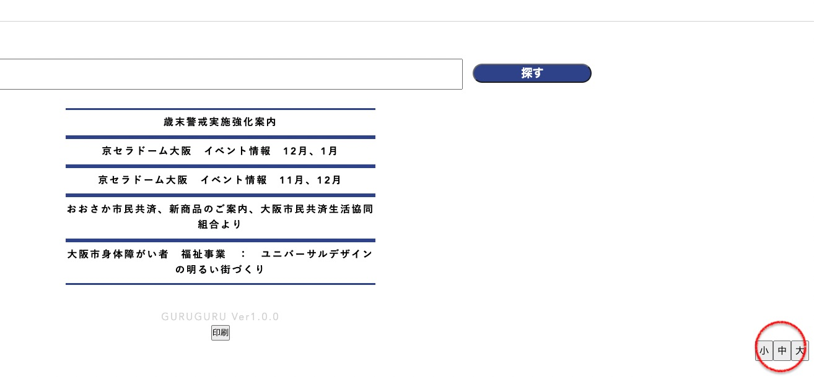
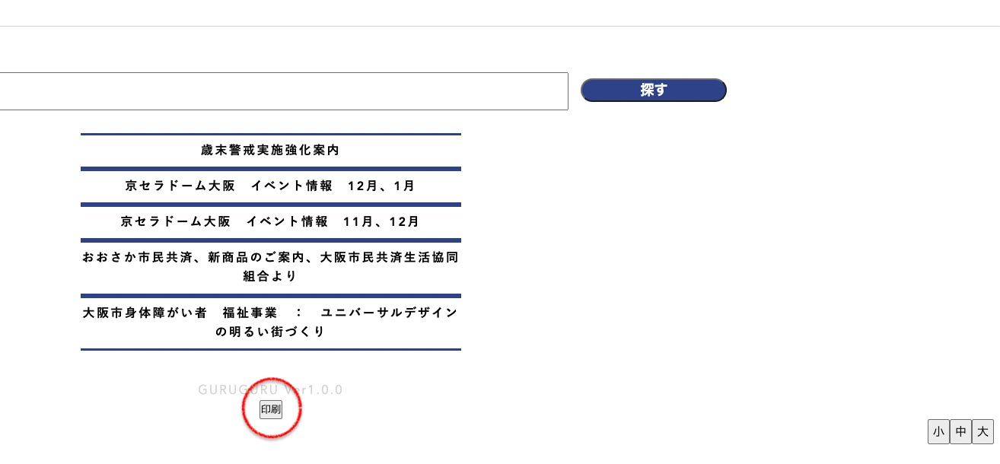
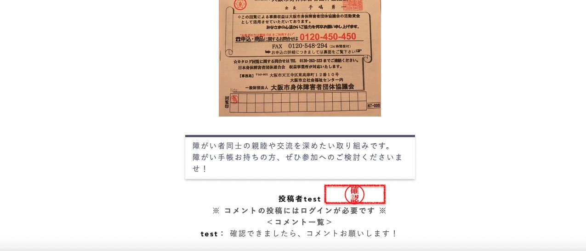
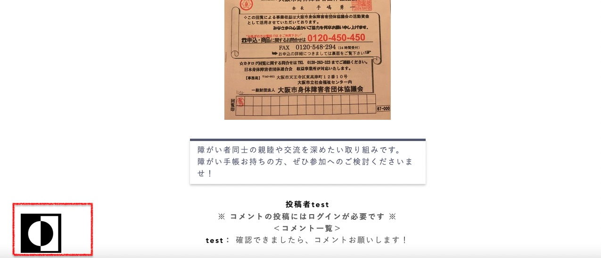

グルグル（お知らせ情報共有アプリ）
開発環境
Ruby / Ruby on Rails / MySQL / GitHub / Visual Studio Code / AWS
-
概要
制作時間 100時間 URL http://35.78.31.106:3000/ -
動作テスト
テスト用アカウント
mail test@test.test PASS test123
OUTLINEアプリケーションの概要
全世帯がほとんど65歳以上のお年寄りの方々で構成されてる町内会において、既存「紙ベースの回覧板」では情報共有に限界があり、情報を迅速・かつ正確に保管する為に、デジタル化された回覧板アプリを開発しました。
-
開発に至った経緯
現行紙ベースの回覧板は、風に飛ばされたり、雨で紙が濡れたり、野生動物（野良猫）により毀損されるなど、情報の伝達及び管理に多くの労力を必要としており、
また、「町内会費」に関しても、「現金での支払い」しかできず、お釣りの用意や、各世帯への直接訪問など、班長の業務負担へ繋がっておりました。
そこで、上記の問題をデジタルの力で解決したく思い、開発に挑みました。
-
開発で工夫したこと
 1つ目は文字の大きさ調整機能です。フロントエンドにjqueryを用い、文字の大きさが調整できるボタンをフッターのところ、画面の右下に実装しております。
2つ目は全画面印刷機能です。どうしてもデジタル(液晶画面)よりアナログ(紙)の方に見慣れてる方々が多い現状を考慮し、折衷案として画面の印刷し保存・保管ができる印刷機能を実装しました。
３つ目はシンプルなデザインです。若年層よりは少し古いバージョンの電子機器を利用していると思われるヘルソナを考慮、最新技術や華やかなデザインは逆にAPPが重くなってしまう恐れがある為、最小限のデザインに取り組んでおります。
-
今後実装したいと思っていること
 ①色の区別がつきにくい方の配慮
ペルソナが65歳以上となっており、色の区別が難しくなってくる方もいらっしゃることを考慮、フロントUI機能を強化の
一環としてjqueryを用い、色相(背景色と文字色)を変えるボタンを実装する予定です。②いいね！機能を応用した、「お知らせ確認済みボタン」の実装
今現在は各世帯のお知らせの確認有無を、コメント機能を応用して表してます。
将来的にはいいね！機能を応用した「確認済み」ボタンを実装し、お知らせの情報共有が誰までできてるか、一目で確認できる 仕組みを具現化する予定です。